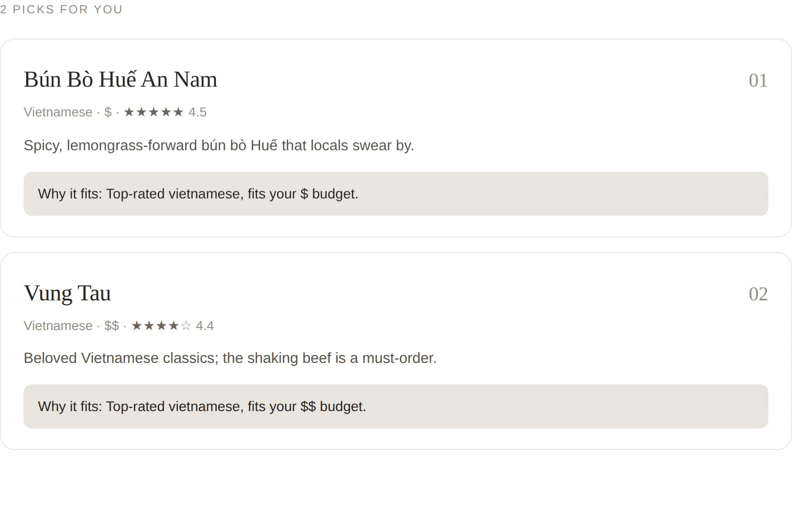

Like asking a friend who always knows the right spot
Tell it where you are, what you're in the mood for, your budget, and the occasion, and it finds real restaurants nearby and explains, in a sentence each, why they're a good fit. The full app queries the Yelp Fusion API for live results and uses GPT-4o-mini to write the explanations.
Highlights
- Searches real, up-to-date restaurants near you (full app, via Yelp)
- Filters by cuisine, budget, and what's open now
- Ranks the best matches and tells you why each one fits
- Takes dietary needs into account
- Remembers your past searches
Examples
A real search: Vietnamese food in San Jose, ranked with a one-line reason for each pick.

Live demo
This runs the real ranking logic against a curated set of San Jose favorites, so it works instantly with no API keys. Pick a cuisine, budget, and occasion below.